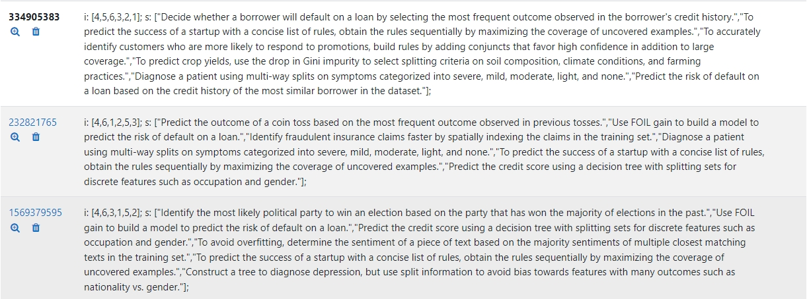
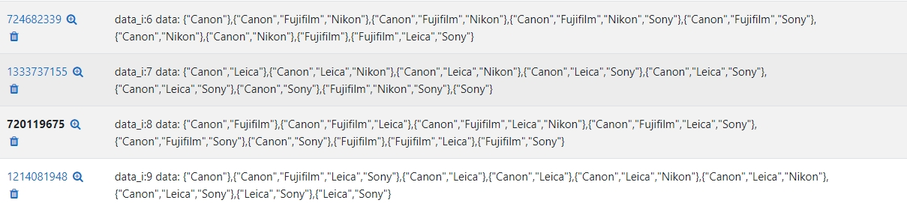

Examples of Programming Variants based Questions#
For programming detail, please refer to CS5483 GitHub Repository by Prof. Chung Chan.
Multiple choice questions#
For multiple-choice type questions, the data contains variables for both dropdown contents that students need to choose and descriptions. The following example regarding classification algorithms demonstrates the usage of Maxima variables, which is one of the variants randomly selected.
::::{note} Different classification algorithms :::{list-table} Choose the classification algorithm associated with the description. :widths: auto :header-rows: 1
Classification
Description
process[0]cases[process[0]]
process[1]cases[process[1]]::: :::{hint} Variants information:
Descriptions are generated via a bunch of cases with the variable
caseslist.Classification algorithms are in a short list
process: ["kNN", "C4.5", "CART", "ZeroR", "PART", "RIPPER"].
Number of variants depends on the permutations of the elements of cases. If the choices are more than 5 and the size of each elements of cases larger than 3, there will be at least $3^6$ variants, which is enough to cover a class size.
:::
::::
:::{seealso} Variant example :class: dropdown The question is from the variant with ID $334905383$.  :::
Blank-filling Questions with Variants Embedded#
::::{note} Apriori and Association Rule :::{list-table} Consider the following transactional data where each transaction is an itemset consisting of different brands of camera lenses puerchase: :widths: auto :header-rows: 1
Transaction ID
Set of brands of purchased lenses
$T_1$
D_tex[0]
$T_2$
D_tex[1]
$T_3$
D_tex[2]
:::
The ordered list of all brands is [Canon, Fujifilm, Leica, Nikon, Sony].
The question is built from a fixed data data_default followed by the variants data generated with criteria. All the following questions are programmably generated with Maxima functions, e.g. the pruned itemsets AP_1 and AP_2 are from the function apriori_join, apriori_prune operating on the data.
:::{list-table} Give the pruned itemsets in each row in the order pruned by the Apriori algorithm according to the ascending lexicographical order of the item labels.
:widths: auto
First pruned itemset:
AP_1
Second pruned itemset:
AP_2
::: :::{hint} Variants information:
The table, i.e. the variable
D_tex, is generated based on the variantsdata, which plays the independent role in the whole question.All the answers are programmably calculated by the functions defined based on Apriori algorithm.
The 3 fractions in Q3 $\frac{5}{9}, \frac{5}{6}, \frac{15}{16}$ are generated by
Maximacodes. ::: :::{attention} Criteria: :class: dropdownBuild
datafromdata_defaultto avoid zero frequent itemsets.Filter the
datawith trivial results from association rules, e.g. support / confidence / lift is 0. ::: :::{list-table} Complete the following using the support-confidence framework to identify association rules with support at least 0.4 and confidence at least 0.5. List the rules in descending lexicographical order of (support, confidence, lift), e.g., (0.5,0.6,1) should be before (0.4,0.6,2), which should be before (0.4,0.6,1). :widths: auto :header-rows: 1Association Rules
Support
Confidence
Lift
{Canon} $\implies$ {Fujifilm}
$\frac{5}{9}$
$\frac{5}{6}$
$\frac{15}{16}$
q3aitem[2]$\implies$q3bitem[2]q3_numerical[1][2]q3_numerical[2][2]q3_numerical[3][2]:::
::::
:::{seealso} Variant example :class: dropdown The question is from the variant with ID $720119675$.  :::